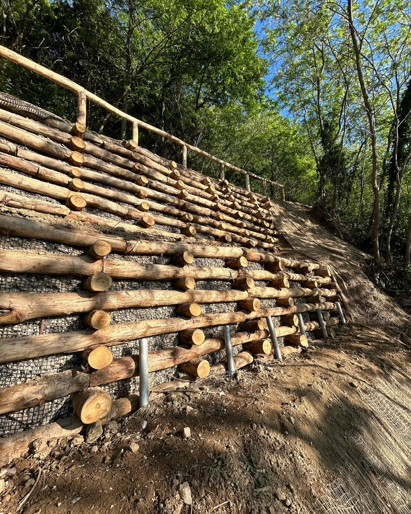
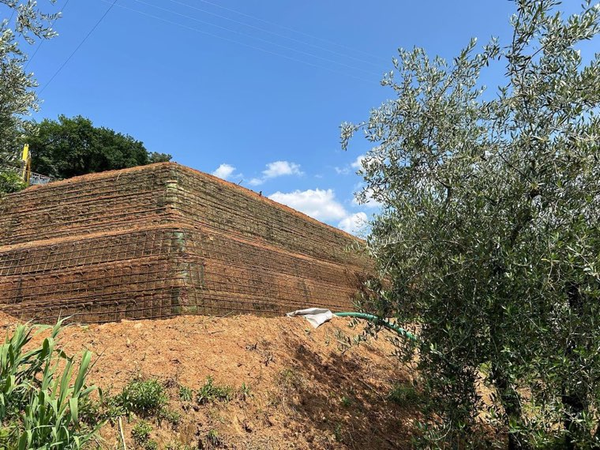
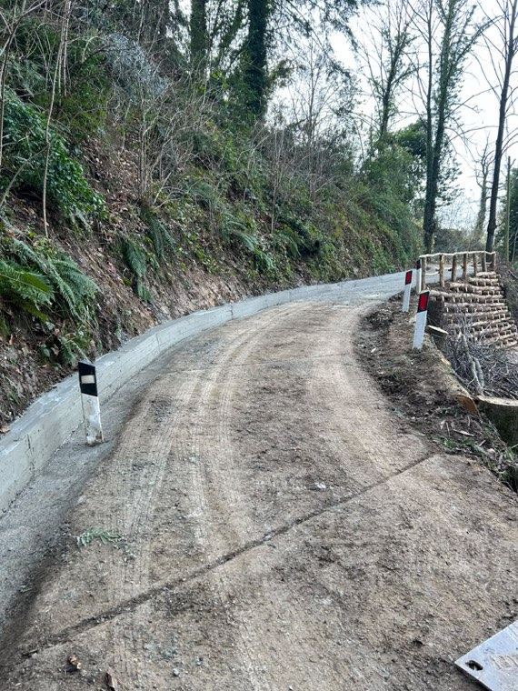
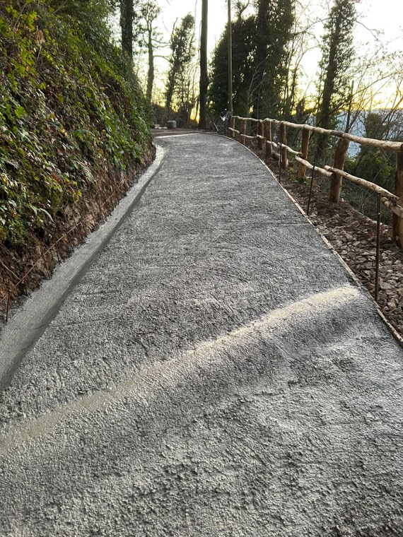

Strutture solide con impatto ambientale pressoché nullo.
Consolidiamo versanti e scarpate con tecniche che uniscono l'ingegneria ai materiali vivi: il terreno viene stabilizzato subito e nel tempo l'opera si integra nel bosco. Sono lavori che richiedono mezzi adatti alla pendenza e squadre che sappiano lavorare a quota — li eseguiamo direttamente, senza girarli a terzi.
Dove: Pescia, Valdinievole, Montecatini Terme, Monsummano Terme, Buggiano, Uzzano e tutta la provincia di Pistoia.







Ci mandi due foto del posto su WhatsApp: le diciamo se è fattibile e le fissiamo il sopralluogo.